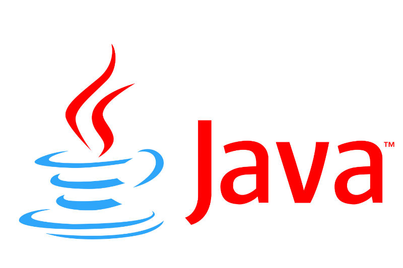

Java is een programmeertaal die is geschreven door de Canadees James Gosling in de jaren 90.
Gosling werkte destijds bij het bedrijf Sun Microsystems, dat in 2010 werd overgenomen door Oracle.
Java was vooral gemaakt met het doel om op elk platform te kunnen runnen zonder dat de code opnieuw moet worden geschreven.
Qua syntax lijkt Java veel op C en C++.
Java is nog steeds een van de meest populaire programmeertalen op de wereld.GeschiedenisHet idee voor Java ontstond in 1990 toen een softwareontwikkelaar van Sun Microsystems, Patrick Naughton, steeds meer gefrustreerd raakte met de in C en C++ geschreven programma’s waar hij mee moest werken. |
 | ||
| Naughton kreeg de kans van Sun Microsystems om een nieuwe programmeertaal te ontwikkelen onder een project met de naam 'The Stealth Project'.
Het project werd later hernoemd naar 'Green Project' en het werd ondersteunt met een team bestaande uit 4 anderen, waaronder James Gosling.
Hoewel Patrick Naughton met het idee van een nieuwe programmeertaal kwam was het James Gosling die met het daadwerkelijke idee voor Java kwam.
Daarom wordt Gosling gezien als de bedenker van Java.
Het duurde 18 maanden voordat de taal af was en werd de naam 'Oak' gegeven, deze naam werd door Gosling gekozen omdat er een grote eik buiten zijn kantoor stond.
De taal werd echter later hernoemd naar Java wegens copyright-redenen.
Java was ontwikkeld met een syntax die veel leek op de syntax van C++ en C zodat programmeurs al snel met de taal vertrouwd zouden raken. De eerste versie van Java JDK 1.0 werd in 1996 uitgebracht door Sun Microsystems, met de slogan 'Write Once, Run Anywhere' die beloofde dat Java code onafhankelijk van het platform kon worden uitgevoerd zonder de code te hoeven aanpassen. De eerste versie was vrij veilig een bood opties om toegang tot bepaalde bestanden en netwerk toegangen te weigeren. Veel webbrowsers voegden de functie om Java applets te schrijven toe en de taal werd al gauw zeer populair. In 1997 diende Sun Microsystems een verzoek in bij de ISO/IEC JTC 1 en de 'European Computer Manufacturers Association (ECMA)' om Java te standaardiseren, maar het trok zich kort daarna weer terug uit deze onderhandelingen. Java is nu nog steeds een van de weinig veel gebruikte programmeertalen die niet is gestandaardiseerd. In 2006 begon Sun Microsystems met het publiceren van de code voor hetgeen waarin Java code word uitgevoerd namelijk de 'Java Virtual Machine (JVM)'. Het proces werd voltooid in 2007, vrijwel alle code is tegenwoordig te downloaden. ApplicatiesVeel apps op je mobiel zijn waarschijnlijk in Java geschreven aangezien het een van de meest populaire talen is voor mobiele applicaties. Het wordt vaak gebruikt in combinatie met software als Android Studio en Kotlin om apps te maken. Java wordt ook veel gebruikt voor het schrijven van professionele programma's. Eclipse en Netbeans zijn hier twee voorbeelden van. Hiervoor wordt vaak de Java Enterprise Edition (Java EE) gebruikt. Java EE wordt verder ook veel gebruikt voor het schrijven van software van grote banken. Verder wordt de code voor wetenschappelijk calculaties vaak in Java geschreven. Deze programma's moeten niet alleen heel veilig zijn, omdat ze soms met zeer geheime data rekenen, maar ook razendsnel zodat de berekeningen niet te lang duren. Een heel krachtig een veel gebruikt programma voor wetenschappers, MATLAB, is voor een deel in Java geschreven. Een laatste toepassing van Java is op het gebied van game ontwikkeling. Een van de meest krachtigste 3D-engines, jMonkeyEngine, werkt heel goed met Java. De engine heeft echter soms wat vertraging omdat de 'garbage collection' van het gebruikte geheugen het spel soms kort moet pauzeren om ruimte vrij te maken. Dit probleem zal echter verholpen worden in nieuwere versies van JVM. |
|||
Voordelen
|
Nadelen
|
||